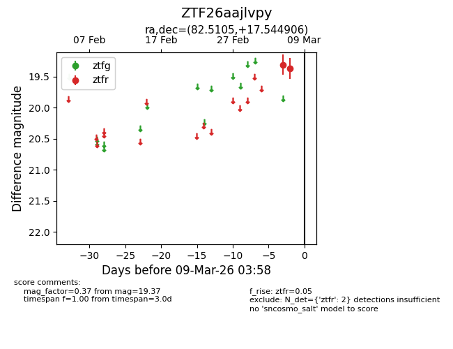
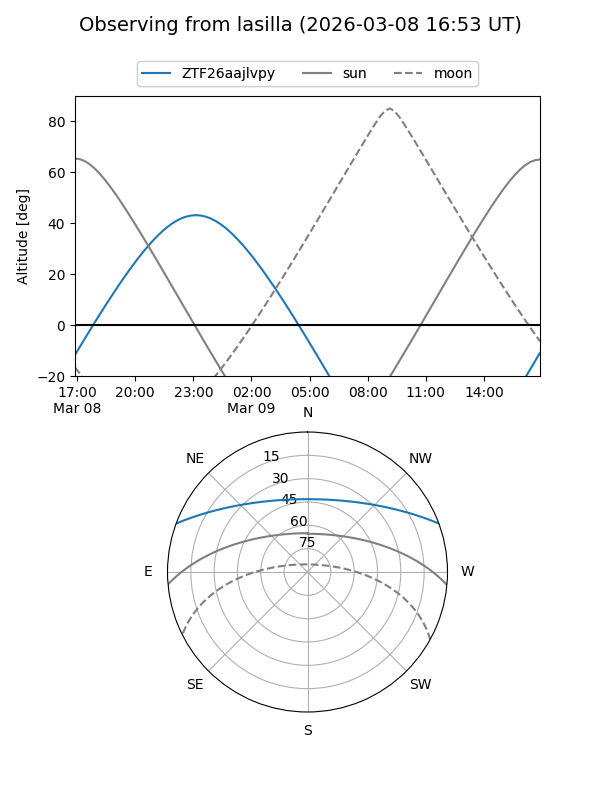
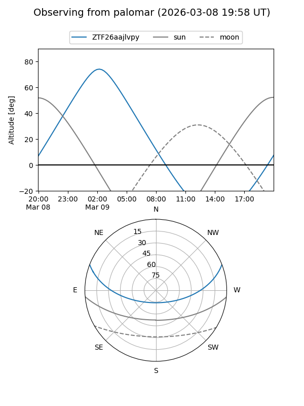

ZTF26aajlvpy
Target ZTF26aajlvpy at 2026-03-09 03:59
Aliases and brokers:
FINK: link
Lasair: link
ALeRCE: link
alt names
ZTF26aajlvpy (ztf,fink_ztf)
Coordinates:
equatorial (ra, dec) = 82.5105,+17.54491
equatorial (HMS+DMS) = 05:30:02.52,+17:32:41.66
galactic (l, b) = (187.7948,-9.06921)
Flags:
Photometry:
last ztfr=19.37
2 ztfr detections
Lightcurve

Visibility


Additional plots